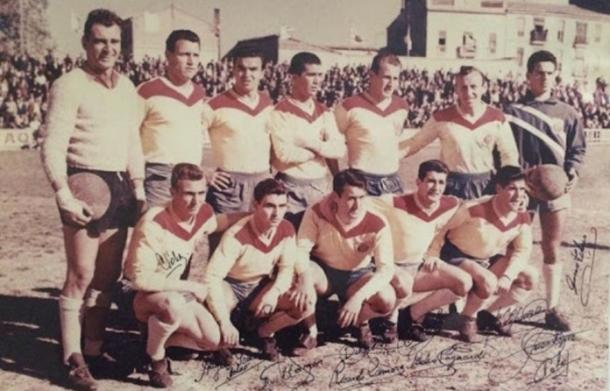
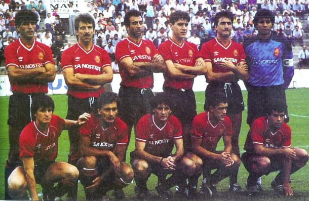
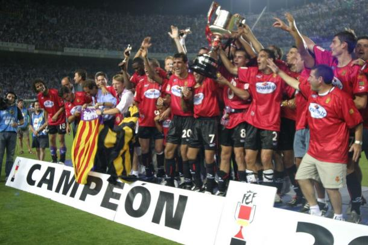
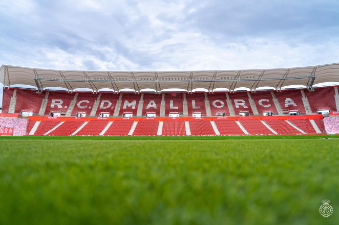
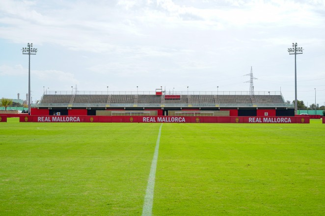

Nuestra historia
El Real Club Deportivo Mallorca, es un club del fútbol español de la ciudad de Palma (Islas Baleares), que fue fundado el 5 de marzo de 1916, bajo el nombre del Alfonso XIII Football Club. Tras denominarse también Real Sociedad Alfonso XIII Football Club y Club Deportivo Mallorca, en la temporada 1949-1950, pasó a denominarse Real Club Deportivo Mallorca. Es, oficialmente, el mejor club de la historia del fútbol balear.
Orígenes
El 5 de marzo de 1916, fue registrado en la Federación Española de Fútbol un nuevo club, el Alfonso XIII Football Club. Un día después, se constituía la Junta Directiva, encabezada por Adolfo Vázquez Humasqué y otras ocho personas. El 25 de marzo se inauguraba oficialmente el primer estadio, el campo de Buenos Aires, con un encuentro entre el Alfonso XIII y el FC Barcelona, con victoria de los visitantes (0-8). En junio de ese mismo año, el rey Alfonso XIII de Borbón honró al equipo con el nombre de Real Sociedad, por lo que el club pasó a llamarse Real Sociedad Alfonso XIII Football Club.
En 1917, la Federación Catalana admitió a la Real Sociedad Alfonso XIII para que tomara parte del Campeonato de Segunda Catalán, en calidad de campeón oficioso de las Islas Baleares. El club fue creciendo poco a poco y en 1931 cambió su denominación por la de Club Deportivo Mallorca, debido a la instauración de la Segunda República Española, que ocasionó la supresión de toda alusión a la realeza. Tras la finalización de la Guerra Civil en 1936, se constituyó la Segunda División, con 5 grupos de 8 equipos, en los que se incluyó al Mallorca.
El 22 de septiembre de 1945, estando en Segunda División, se inaugura Es Fortí, nuevo estadio del club balear, con capacidad para 16.000 espectadores. Varios meses después, el estadio pasó a denominarse Lluis Sitjar, la persona que tres años antes había impulsado la construcción del nuevo campo. En el curso 1949-1950, el club recuperó el título de Real, pasando a denominarse por primera vez en su historia como Real Club Deportivo Mallorca.

Años 60: El ascenso a primera división
En 1960, el RCD Mallorca, consiguió alcanzar la División de Honor, por primera vez en su historia. De la mano de Juan Carlos Lorenzo, los bermellones lograron el ascenso a Primera División el 17 de abril de 1960, imponiéndose al Levante UD (1-2) con goles de Julià Mir y José Rodríguez. La primera temporada en Primera División, terminó con el equipo en novena posición, con Joan Forteza pasando a la historia por lograr el primer gol de RCD Mallorca en la máxima categoría. La primera travesía en Primera División, duró tres temporadas, cayendo nuevamente a Segunda División en la temporada 1962-1963.
Esta década, se completó con dos ascensos a Primera División más, pero descendiendo la temporada siguiente. El primero, llegó en la campaña 1964-1965, tras vencer al Valencia Mestalla (1-0), con César Rodríguez como entrenador. El segundo, se logró finalizando la década, en la temporada 1968-1969 con el tándem formado por Juan Carlos Forneris y Sergio Rodríguez en el banquillo. Ambos pasos por Primera División, fueron de manera fugaz.
Años 70: Década aciaga en la isla
Tras el descenso a Segunda División en la temporada 1969-1970, los años 70 resultaron convulsos en la historia del club. Rápidamente se intentó hacer un equipo para volver a la máxima categoría, pero las deudas económicas atenuaban al club. Tanto fue el cántaro a la fuente, que en la temporada 1974-1975, el equipo bermellón acabó descendiendo a Tercera División. La situación financiera, hacía tambalear al club, tanto que estuvo a punto de desaparecer y en noviembre de 1977 los futbolistas protagonizaron el primer encierro en la historia del fútbol por impagos. En el curso 1979-1980 el Mallorca se proclama campeón de su grupo de Tercera División y asciende a Segunda División B, una categoría de reciente creación.
Años 80: Subidas y Bajadas
El RCD Mallorca comenzó la década de los 80, jugando en Segunda División B, dejando atrás unos años de situación crítica. La década no pudo comenzar mejor, con el ascenso a Segunda División en la temporada 1980-1981 con Antonio Oviedo en el banquillo, sin perder un solo encuentro en el Lluis Sitjar. En su segundo año en la categoría de plata tras el ascenso, el Mallorca logró su cuarto ascenso a Primera División, el 22 de mayo de 1983 con Lucien Muller como técnico. La vuelta a Primera División, resultó nuevamente un fracaso, descendiendo a la temporada siguiente.
La temporada 1985-1986, también pasó a la historia, por varios motivos. El primero y más importante, fue el quinto ascenso a Primera División, de la mano de Lorenzo Serra Ferrer, consiguiendo un agónico ascenso el 18 de mayo de 1986 en Las Gaunas, con un gol de Luis García en el minuto 85 de partido(1-2), ante miles de seguidores desplazados desde la isla. Por primera vez en años, el Mallorca logró permanecer en la categoría la siguiente campaña, realizando una temporada espectacular, convirtiéndose en una de las revelaciones, quedando sexto clasificado, a un paso de disputar la Copa de la UEFA.
Nada hacía presagiar el desenlace de la siguiente campaña, en la que el equipo descendía tras caer en la promoción frente al Real Oviedo. El paso por la Segunda División, fue efímero, ya que, se consiguió el ascenso, el sexto, en la temporada 1988-1989, nuevamente con Serra Ferrer y tras superar al Espanyol en una agónica promoción con un Lluis Sitjar a reventar. Los goles de Miguel Ángel Nadal y Gabi Vidal, certificaron el ascenso (2-0).
Años 90: El primer título del Mallorca
Con Lorenzo Serra Ferrer, los bermellones permanecieron en Primera División tras el ascenso y en la temporada 1990-1991, disputaron por primera vez en su historia una final, la de la Copa del Rey. Tras eliminar a Gimnástica de Torrelavega, Sabadell, Oviedo, Elche, Valencia y Sporting de Gijón, el Mallorca cayó en la final ante el Atlético de Madrid, con un gol de Alfredo Santaelena en la prórroga. Tras esta histórica temporada, en la 1991-1992, el conjunto balear descendió a Segunda División, tras una campaña desastrosa. Comenzó entonces, el lustro más negro de esta década con cinco temporadas consecutivas en Segunda División, formando siempre buenos equipos pero quedándose lejos del objetivo o a las puertas. Hasta dos promociones jugó, sin suerte, primero en 1993 ante el Albacete y posteriormente en 1996 frente al Rayo Vallecano. Precisamente ante el cuadro madrileño, una temporada después, en el curso 1996-1997, los isleños consiguieron su séptimo ascenso a Primera División, con Bartomeu Llompart en el banquillo.
Tras el ascenso, llegó Héctor Cúper al banquillo y en su primer curso, llevó al cuadro insular hasta su segunda final de la Copa del Rey, tras eliminar a Sóller, Las Palmas, Celta de Vigo, Athletic Club de Bilbao y Alavés. En la final, esperaba el todopoderoso FC Barcelona, que se llevó la final en la tanda de penaltis tras concluir el partido y la prórroga con 1-1. Además, se consiguió una meritoria quinta plaza en el campeonato liguero. El 22 de agosto de 1998, el RCD Mallorca logró el primer título de su historia, al imponerse al FC Barcelona, en la disputa de la Supercopa de España, venciendo en Palma (2-1) y en el Camp Nou (0-1). El subcampeonato copero conseguido la campaña anterior, dio acceso a disputar la Recopa de Europa, torneo en el que se llegó a una nueva final. Heart of Midlothian, Genk, Varazdin y Chelsea quedaron por el camino, antes de enfrentarse a la Lazio en el partido decisivo por el título. Los italianos vencieron 2-1 y dejaron a los bermellones sin el ansiado sueño. La campaña, se vio redondeada con la primera clasificación de su historia para la Champions League, merced al tercer puesto conseguido en el campeonato liguero, aunque no pudo pasar la fase previa. Fue la última temporada en el Lluis Sitjar, pasando a ser Son Moix, la nueva casa del RCD Mallorca.

Hasta la actualidad
Durante la década de 2000-2010, el Mallorca experimentó algunos de sus mejores momentos en la historia del club. Con Luis Aragonés como entrenador, el equipo logró el récord de puntos (71) en una sola temporada, lo que les permitió clasificarse para la Champions League. Además, en esa misma temporada, el equipo batió récords de goles (61) y victorias (20).
Aunque Luis Aragonés dejó el equipo antes del inicio de la siguiente temporada, Bernd Krauss tomó las riendas y llevó al equipo a disputar su primer partido de la Champions League frente al Arsenal, con una victoria 1-0 gracias al gol de Vicente Engonga. Un año después, el equipo logró uno de sus mayores éxitos al ganar el título de la Copa del Rey en la tercera final que disputaron, venciendo al Recreativo de Huelva por 3-0 con goles de Pandiani y Eto'o. El equipo también logró salvarse del descenso en varias ocasiones, incluso con Héctor Cúper como entrenador, cuando a falta de siete jornadas estaban a once puntos de la salvación.
Sin embargo, en la década de 2010-2020, el equipo sufrió altibajos. Tras 16 años en la Primera División, el Mallorca descendió a la Segunda División en la temporada 2012-2013. A pesar de varios intentos fallidos por recuperar la categoría, el equipo sufrió su mayor fracaso en la temporada 2016-2017, cuando descendió a la Segunda División B.
Afortunadamente, el equipo logró resurgir bajo el liderazgo de Vicente Moreno, quien los llevó de vuelta a la Segunda División y luego a la Primera División, con una histórica remontada en la final del playoff de ascenso. Desafortunadamente, su regreso a la Primera División fue breve y el equipo volvió a descender a la Segunda División en la temporada 2019-2020. Actualmente, el equipo está dirigido por Luis García y está luchando por regresar a la máxima categoría del fútbol español.
Instalaciones
Estadio Son Moix
Ciudad deportiva Antonio Asensio
Contacto
Información general:
Teléfono: +34 971221221
Área de aficionados:
Socios: taquillas@rcdmallorca.es
Peñas y FanClubs: fanclub@rcdmallorca.es
Área de marketing:
Director marketing: jserra@rcdmallorca.es
Departamento de marketing: cjaume@rcdmallorca.es
Tienda Estadio: +34 971221534
Tienda Centro: +34 971778302
Área de comunicación:
Departamento de comunicación: lseoane@rcdmallorca.es
Acreditaciones prensa: acreditaciones@rcdmallorca.es
Otros
Fundación Real Mallorca: juguestu@fundacioreialmallorca.org Teléfono: +34 971221231